Windows Setup
Preface
At this stage of the development, there is no installer.
Currently the way to use OSA-Mailer is it have an external system to run its run script osa_mailer.cmd
Preparations
Download
Steps:
- Get to the releases page
- Pick the latest version of OSA-Mailer
- Expand the
Assetstitle by clicking on it- Pick the
.7z7-zip archive file for Windows and click on it to start downloading
Extract
In order to extract a 7-zip archive, you need an extractor that supports it. Your best bet is probably to download the official 7-zip from its website https://www.7-zip.org/
Steps:
- Extract the archived file from the
Downloadsection anywhere you like, but make sure you will have controlled access to the extractedoutboxdirectory as this directory serves clients as a gateway for sending E-mails
Configure
osa_mailer.cmd::: Configurations SET SERVER=localhost SET PORT=25 SET AUTH=noauth ::SET USERNAME=username ::SET PASSWORD=passwordSteps:
- Edit the script file
osa_mailer.cmdwith your favorite text editor- Look for the
:: Configurationscomment- Notice the
SETstatements which set each environment variable for OSA-Mailer- Configure each environment variable accordingly
Environment Variable Description Mandatory SERVERSMTP server IP address or hostname (e.g. Gmail, Outlook, SMTP relay-proxy, etc.) ✅ PORTThe TCP port number for the SERVERvariable✅ AUTHAuthentication method: TLS,STARTTLSorNOAUTH✅ USERNAMEProvides the username when using an authentication method other than NOAUTH❌ PASSWORDProvides the password when using an authentication method other than NOAUTH❌
- To uncomment a variable, remove the double-colons
::from itsSETstatement (e.g.::SET USERNAME=usernamebecomesSET USERNAME=username)
Setup a Task for Windows Task Scheduler
Windows Task Scheduler can be used as a means to trigger and activate OSA-Mailer, but it is not a requirement in case it doesn't fit your use-case.
Open the Windows Task Scheduler
Here are a few links to external articles on different methods to launch the Windows Task Schedular:
Here is one way to do this:
In order to open the Windows Task Schedular, we will use aRuncommand:
- Hold the
Windowsbutton + press theRbutton- This should open the
Runwindow- Type in:
taskschd.mscand either click theOKbutton or press theENTERkey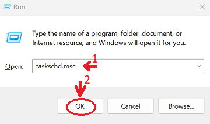
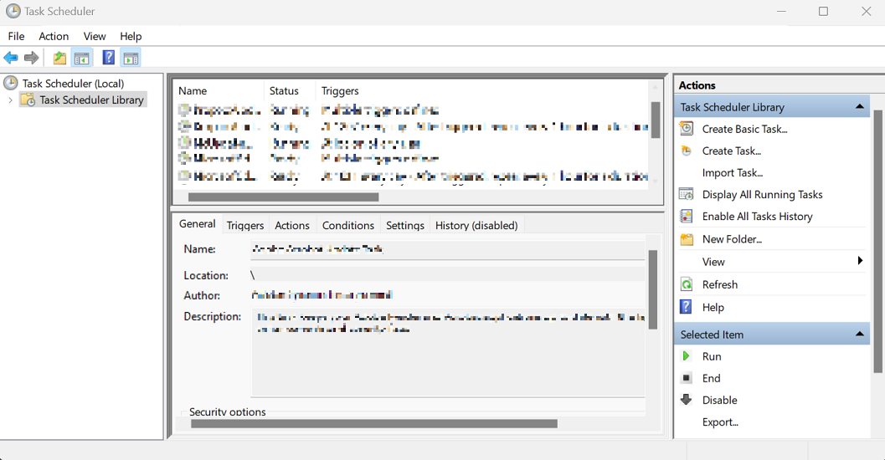
Create a new Task
It is recommended to create the task within a dedicated folder so it will be easier to maintain and not mix-up with other unrelated tasks.
Steps:
- On the left pane, select the
Task Scheduler Librarydirectory by clicking on it once with theLEFT MOUSE BUTTON- Once selected,
RIGHT MOUSE BUTTONclick on the already selectedTask Scheduler Library, to open the actions menu- Select
New Folder...from the actions menu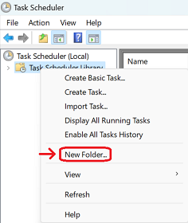
- Pick a proper name (
OSA-Maileris recommended) and either click on theOKbutton or press theENTERkey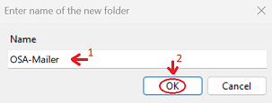
- Select the newly created folder by a single
LEFT MOUSE BUTTONclick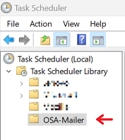
- Once selected,
RIGHT MOUSE BUTTONclick on it again to pop the actions menu- Select the
Create Task...from the actions menu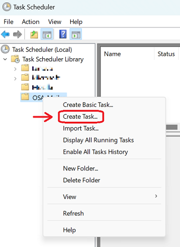
- The
Create Taskwindow will pop-up- Provide the name for the task:
Check Outbox(recommended)- Under
Security options, select theRun whether user is logged on or notand check theDo not store password. The task will only have access to local computer resources.checkbox- Click on the
Triggerstab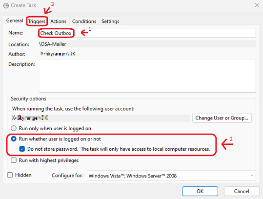
- On the
Triggerstab, click on theNew...button to create a new trigger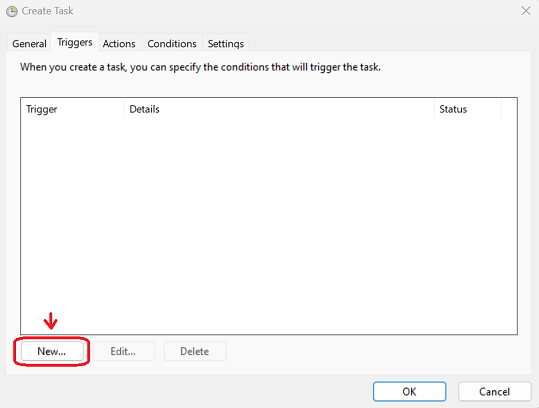
- The
New Triggerwindow will pop-up- Make sure that
Begin the task:is set toOn a schedule- Make sure that
Settingsis set onOne time- Under
Advanced settings, make sure that theRepeat task every:checkbox is checked- (Recommended): Manually copy the value
1 minuteand assign it- Make sure that
for a duration of:is set toIndefinitely- Make sure that the
Enabledcheckbox is checked- Click on the
OKbutton to the add the trigger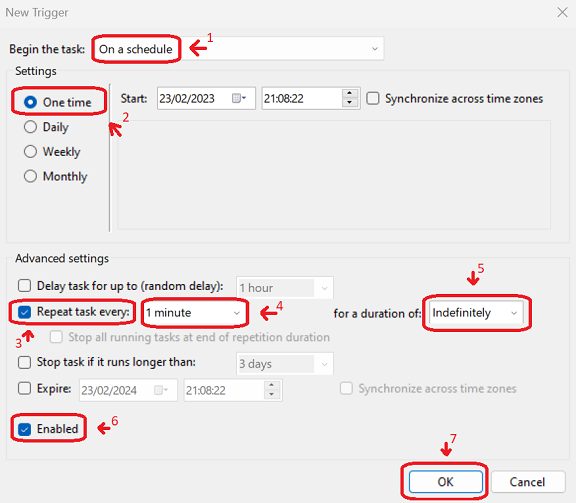
- Click on the
Actionstab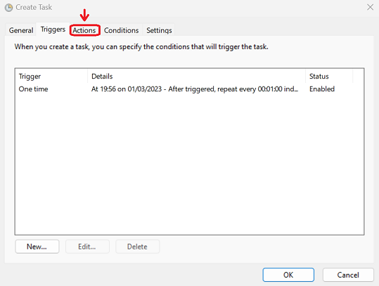
- On the
Actionstab, click on theNew...button to create a new action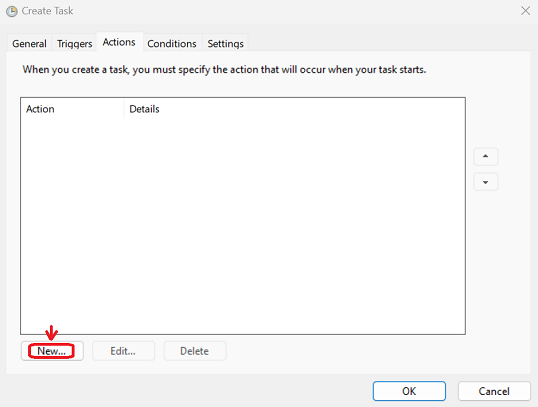
- The
New Actionwindow will pop-up- Under the
Program/script:textbox, assign the path to where theosa_mailer.cmdfile is located
- Optional: You can click on the
Browse...button to locate theosa_mailer.cmdfile
- Click on the
OKbutton to add the action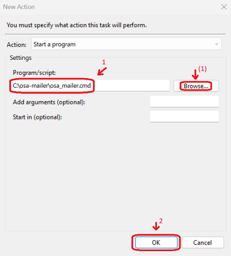
- Click on the
Conditionstab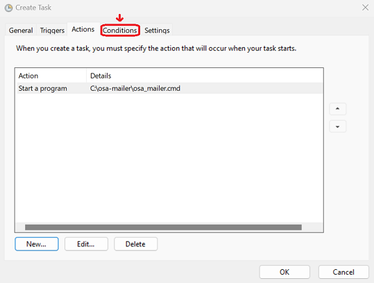
- Make sure that there are no conditions in place and all checkboxes are unchecked
- Click on the
Settingstab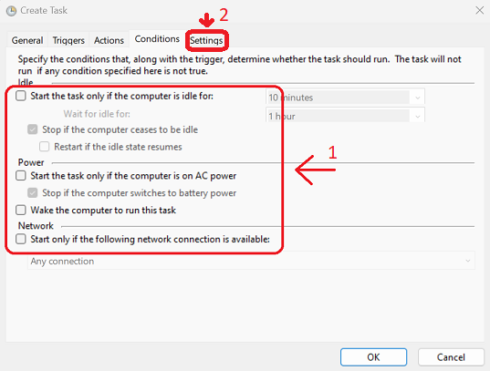
- Make sure that only the following checkboxes are checked:
Allow task to be run on demandRun task as soon as possible after a scheduled start is missedIf the running task does not end when requested, force it to stop- Make sure that the field
If the task is already running, then the following rule applies:has the valueDo not start a new instancein its dropbox- Make sure the rest of the checkboxes are unchecked
- Click on the
OKbutton to create the task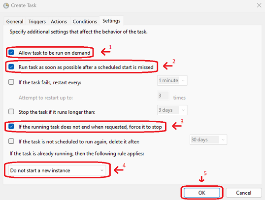
- We are finished. You can close the Windows Task Scheduler